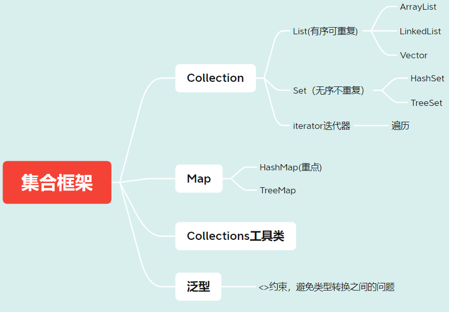
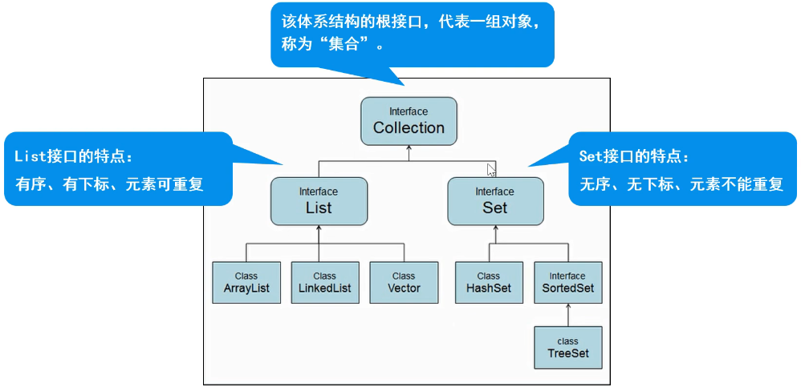
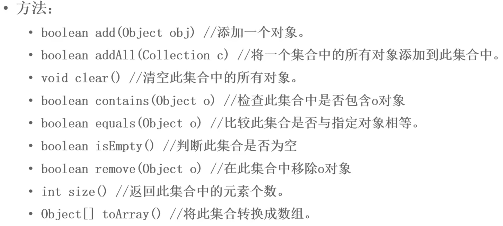
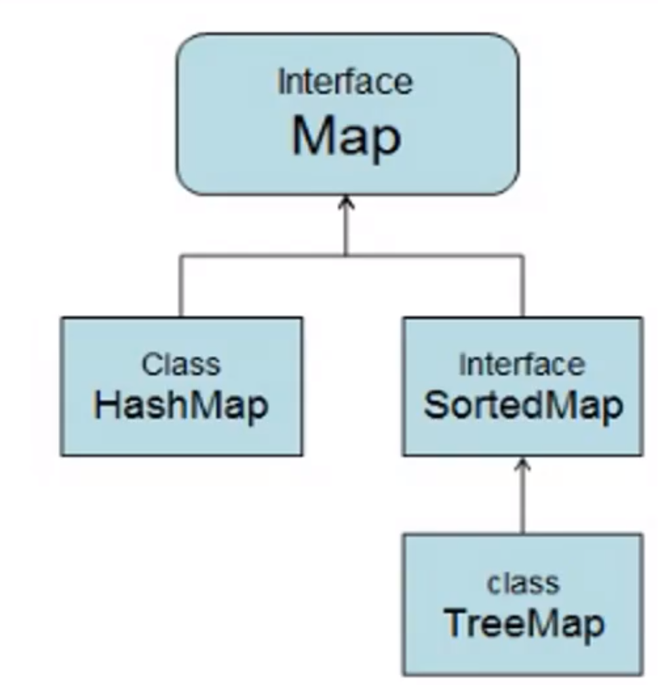
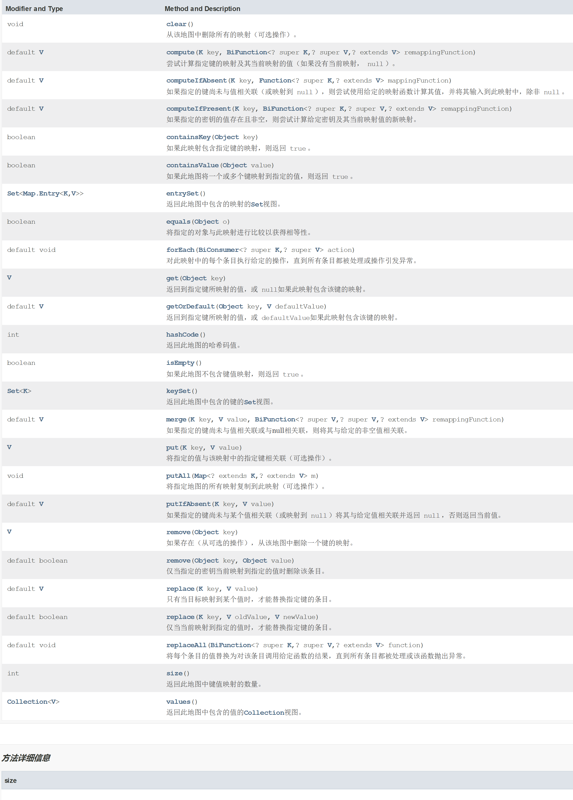
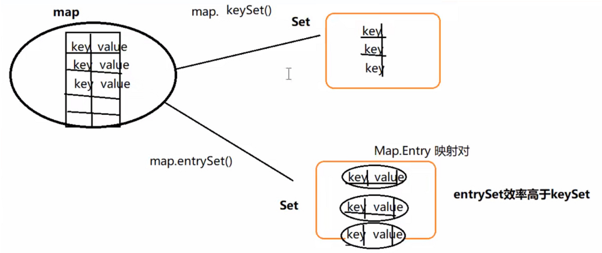

1.什么是集合 
1.1 概念 对象的容器，实现了对对象常用的操作
1.2 和数组的区别
1.3 位置 java.util.*;
2.Collection体系 
2.1 Collection父接口
特点：代表一组任意类型的对象，无序、无下标、不能重复。
创建集合 Collection collection = new ArrayList();
2.2 常用方法 
1.添加元素 collection.add();
判断集合大小:collection.size();
2.删除元素
1 2 3 collection.remove(); collection.clear();
3.遍历元素（重点）
1 for (Object object : collection){ }
1 2 3 4 5 6 7 8 9 Iterator it = collection.iterator();while (it.hasNext()){ String object = (String)it.next(); }
4.判断 collection.contains(); collection.isEmpty();
Demo
1 2 3 4 5 6 7 8 9 10 11 12 13 14 15 16 17 18 19 20 21 22 23 24 25 26 27 28 29 30 31 32 33 34 35 36 37 38 39 40 41 42 43 44 45 46 47 48 49 50 51 package com.Collection;import java.util.ArrayList;import java.util.Collection;import java.util.Iterator;public class Demo1 { public static void main (String[] args) { Collection collection = new ArrayList (); collection.add("香蕉" ); collection.add("苹果" ); collection.add("西瓜" ); System.out.println("元素个数：" +collection.size()); System.out.println(collection); System.out.println("==========================" ); for (Object object:collection) { System.out.println(object); } System.out.println("==========================" ); Iterator iterator = collection.iterator(); while (iterator.hasNext()) { String s = (String) iterator.next(); System.out.println(s); } System.out.println("元素个数：" +collection.size()); System.out.println(collection.contains("香蕉" )); System.out.println(collection.isEmpty()); } }
1 2 3 4 5 6 7 8 9 10 11 12 13 14 15 16 17 18 19 20 21 22 23 24 25 26 27 28 29 30 31 32 33 34 35 36 37 38 39 40 package com.Collection;public class Student { private String name; private int age; public String getName () { return name; } public void setName (String name) { this .name = name; } @Override public String toString () { return "Student{" + "name='" + name + '\'' + ", age=" + age + '}' ; } public int getAge () { return age; } public void setAge (int age) { this .age = age; } public Student () { } public Student (String name, int age) { this .name = name; this .age = age; } }
1 2 3 4 5 6 7 8 9 10 11 12 13 14 15 16 17 18 19 20 21 22 23 24 25 26 27 28 29 30 31 32 33 34 35 36 37 38 39 40 41 42 43 44 45 46 47 48 49 50 package com.Collection;import java.util.ArrayList;import java.util.Collection;import java.util.Iterator;public class Demo2 { public static void main (String[] args) { Collection collection = new ArrayList (); Student s1 = new Student ("张三" ,18 ); Student s2 = new Student ("李四" ,19 ); Student s3 = new Student ("王五" ,21 ); collection.add(s1); collection.add(s2); collection.add(s3); System.out.println("元素个数：" +collection.size()); System.out.println(collection.toString()); System.out.println("========增强for===========" ); for (Object object:collection) { Student s = (Student) object; System.out.println(s.toString()); } System.out.println("========使用迭代器===========" ); Iterator iterator = collection.iterator(); while (iterator.hasNext()) { Student s = (Student) iterator.next(); } System.out.println(collection.toString()); System.out.println(collection.contains(s1)); System.out.println(collection.isEmpty()); } }
3.List子接口
特点：有序、有下标、元素可重复
创建集合对象 List list = new ArrayList<>( );
3.1 常用方法
1.添加元素 list.add( ); 会对基本类型进行自动装箱
2.删除元素 可以用索引 list.remove(0)
当删除数字与索引矛盾时 对数字强转
list.remove((Object) 10) 或 list.remove(new Integer(10))
3.遍历
1 2 3 for (int i = 0 ; i < lise.size(); i++){ sout(list.get(i)); }
1 for (Object list: collection){ }
1 2 3 4 5 6 Iterator it = collection.iterator();while (it.hasNext()){ String object = (String)it.next(); }
4.使用列表迭代器 💡（注意和迭代器区别）
和迭代器的区别：可以向前或向后遍历，添加、删除、修改元素
1 2 3 4 5 6 7 8 ListIterator li = list.listIterator();while (li.hasNext()){ System.out.println(li.nextIndex() + ":" + li.next()); } while (li.hasPrevious()){ System.out.println(li.previousIndex() + ":" + li.previous()); }
4.获取 list.indexOf( );
5.返回子集合 sublist(x, y); 左闭右开
1 List subList = list.subList(1 , 3 );
Demo
1 2 3 4 5 6 7 8 9 10 11 12 13 14 15 16 17 18 19 20 21 22 23 24 25 26 27 28 29 30 31 32 33 34 35 36 37 38 39 40 41 42 43 44 45 46 47 48 49 50 51 52 53 54 55 56 57 58 59 60 61 62 63 64 65 66 67 68 69 70 package com.Collection;import java.util.ArrayList;import java.util.Iterator;import java.util.List;import java.util.ListIterator;public class Demo3 { public static void main (String[] args) { List list = new ArrayList (); list.add("唱" ); list.add("跳" ); list.add(0 ,"打篮球" ); System.out.println("元素个数:" +list.size()); System.out.println(list.toString()); System.out.println("===========for遍历===============" ); for (int i = 0 ; i < list.size(); i++) { System.out.println(list.get(i)); } System.out.println("===========增强for===============" ); for (Object o:list) { System.out.println(o); } System.out.println("===========迭代器===============" ); Iterator iterator = list.iterator(); while (iterator.hasNext()) { System.out.println(iterator.next()); } System.out.println("===========列表迭代器===============" ); ListIterator lit = list.listIterator(); System.out.println("===========列表迭代器从前往后===============" ); while (lit.hasNext()) { System.out.println(lit.nextIndex()+":" +lit.next()); } System.out.println("===========列表迭代器从后往前===============" ); while (lit.hasPrevious()) { System.out.println(lit.previousIndex()+":" +lit.previous()); } System.out.println("==========================" ); System.out.println(list.contains("rap" )); System.out.println(list.isEmpty()); System.out.println(list.indexOf(2 )); } }
1 2 3 4 5 6 7 8 9 10 11 12 13 14 15 16 17 18 19 20 21 22 23 24 25 26 27 28 29 30 31 package com.Collection;import java.util.ArrayList;import java.util.List;public class Demo4 { public static void main (String[] args) { List list = new ArrayList (); list.add(17 ); list.add(27 ); list.add(37 ); list.add(47 ); list.add(57 ); System.out.println("元素个数:" +list.size()); System.out.println(list.toString()); list.remove(0 ); System.out.println("元素个数:" +list.size()); System.out.println(list.toString()); List subList = list.subList(1 , 3 ); System.out.println(subList.toString()); } }
3.2 List实现类
ArrayList 【重点】
数组结构实现，必须要连续空间，查询快、增删慢
jdk1.2版本，运行效率块、线程不安全
Vector
数组结构实现，查询快、增删慢
jdk1.0版本，运行
LinkedList
3.3 ArrayList 创建集合 ArrayList arrayList = new ArrayList<>();
1.添加元素 arrayList.add();
2.删除元素 arrayList.remove(new Student("name", 10));
1 2 3 4 5 6 7 8 9 10 11 12 13 14 15 16 public boolean remove (Object o) { if (o == null ) { for (int index = 0 ; index < size; index++) if (elementData[index] == null ) { fastRemove(index); return true ; } } else { for (int index = 0 ; index < size; index++) if (o.equals(elementData[index])) { fastRemove(index); return true ; } } return false ; }
1 2 3 4 5 6 7 8 9 10 11 12 13 14 15 16 17 18 19 20 21 22 @Override public boolean equals (Object obj) { if (this == obj){ return true ; } if (obj == null ){ return false ; } if (obj instanceof Student){ Student s = (Student)obj; if (this .name.equals(s.getName()) && this .age == s.getAge()){ return true ; } } return false ; }
3.遍历元素【重点】
1 2 3 4 Iterator it = arrayList.iterator();while (it.hasNext()){ Student s = (Student)it.next(); }
1 2 3 4 5 6 7 8 ListIterator li = arrayList.listIterator();while (li.hasNext()){ Student s = (Student)li.next(); } while (li.hasPrevious()){ Student s = (Student)li.previous(); }
4.判断
1 arrayList.contains(); 和 arrayList.isEmpty();
5.查找
原码分析
1 2 3 4 5 6 7 8 9 10 11 12 13 14 15 16 17 18 19 20 21 22 23 24 25 26 27 28 29 private static final Object[] DEFAULTCAPACITY_EMPTY_ELEMENTDATA = {};transient Object[] elementData; private int size;public ArrayList () { this .elementData = DEFAULTCAPACITY_EMPTY_ELEMENTDATA; }
1 2 3 4 5 6 7 8 9 10 11 12 13 14 15 16 17 18 19 20 21 22 23 24 25 26 27 28 29 30 31 32 33 34 35 36 37 38 39 40 41 42 43 44 45 46 47 48 49 50 51 52 53 54 55 56 public boolean add (E e) { ensureCapacityInternal(size + 1 ); elementData[size++] = e; return true ; } private static int calculateCapacity (Object[] elementData, int minCapacity) { if (elementData == DEFAULTCAPACITY_EMPTY_ELEMENTDATA) { return Math.max(DEFAULT_CAPACITY, minCapacity); } return minCapacity; } private void ensureCapacityInternal (int minCapacity) { ensureExplicitCapacity(calculateCapacity(elementData, minCapacity)); } private void ensureExplicitCapacity (int minCapacity) { modCount++; if (minCapacity - elementData.length > 0 ) grow(minCapacity); } private static final int MAX_ARRAY_SIZE = Integer.MAX_VALUE - 8 ;private void grow (int minCapacity) { int oldCapacity = elementData.length; int newCapacity = oldCapacity + (oldCapacity >> 1 ); if (newCapacity - minCapacity < 0 ) newCapacity = minCapacity; if (newCapacity - MAX_ARRAY_SIZE > 0 ) newCapacity = hugeCapacity(minCapacity); elementData = Arrays.copyOf(elementData, newCapacity); }
Demo
1 2 3 4 5 6 7 8 9 10 11 12 13 14 15 16 17 18 19 20 21 22 23 24 25 26 27 28 29 30 31 32 33 34 35 36 37 38 39 40 41 42 43 44 45 46 47 48 49 50 51 52 53 54 55 56 57 58 59 60 61 62 63 package com.Collection;import java.util.ArrayList;import java.util.Iterator;import java.util.ListIterator;public class Demo5 { public static void main (String[] args) { ArrayList arrayList = new ArrayList (); Student s1 = new Student ("张三" ,20 ); Student s2 = new Student ("李四" ,23 ); Student s3 = new Student ("王五" ,19 ); arrayList.add(s1); arrayList.add(s2); arrayList.add(s3); System.out.println("元素个数:" +arrayList.size()); System.out.println(arrayList.toString()); arrayList.remove(new Student ("李四" ,23 )); System.out.println("========= 使用迭代器=========" ); Iterator it = arrayList.iterator(); while (it.hasNext()) { Student s = (Student) it.next(); System.out.println(s.toString()); } System.out.println("========= 列表迭代器=========" ); ListIterator lit = arrayList.listIterator(); while (lit.hasNext()) { Student s = (Student) lit.next(); System.out.println(s.toString()); } System.out.println("========= 列表迭代器逆序=========" ); while (lit.hasPrevious()) { Student s = (Student) lit.previous(); System.out.println(s.toString()); } System.out.println(arrayList.contains(new Student ("王五" ,19 ))); System.out.println(arrayList.isEmpty()); System.out.println(arrayList.indexOf(new Student ("王五" ,19 ))); } }
3.4 Vector
存储结构：数组
创建集合 Vector vector = new Vector<>();
增加（vector.add()）、删除(vector.remove)、判断(vector.contains())同上
遍历–枚举器遍历
1 2 3 4 5 Enumeration en = vector.elements();while (en.hasMoreElements()){ String o = (String)en.nextElement(); sout(o); }
Demo
1 2 3 4 5 6 7 8 9 10 11 12 13 14 15 16 17 18 19 20 21 22 23 24 25 26 27 28 29 30 31 32 33 34 35 36 public class Demo6 { public static void main (String[] args) { Vector vector=new Vector <>(); vector.add("tang" ); vector.add("he" ); vector.add("yu" ); System.out.println("元素个数：" +vector.size()); Enumeration enumeration=vector.elements(); while (enumeration.hasMoreElements()) { String s = (String) enumeration.nextElement(); System.out.println(s); } System.out.println(vector.isEmpty()); System.out.println(vector.contains("he" )); } }
3.5 LinkedList
创建链表集合LinkedList li = new LinkedList<>();
常用方法与List一致
1 2 3 4 5 6 7 8 9 10 11 12 13 14 15 16 17 18 19 20 21 22 23 24 25 26 27 28 29 30 31 32 33 34 35 36 37 38 39 40 41 42 43 44 45 46 47 48 49 50 51 52 53 54 55 56 57 58 59 60 61 62 63 64 package com.Collection;import java.util.Iterator;import java.util.LinkedList;import java.util.ListIterator;public class LinkedListTest1 { public static void main (String[] args) { LinkedList linkedList = new LinkedList <>(); Student s1 = new Student ("张三" ,20 ); Student s2 = new Student ("李四" ,23 ); Student s3 = new Student ("王五" ,19 ); linkedList.add(s1); linkedList.add(s2); linkedList.add(s3); System.out.println("元素个数:" +linkedList.size()); System.out.println(linkedList.toString()); System.out.println("========for=====" ); for (int i = 0 ; i < linkedList.size(); i++) { System.out.println(linkedList.get(i)); } System.out.println("========增强for=====" ); for (Object object:linkedList) { Student s = (Student) object; System.out.println(s.toString()); } System.out.println("========迭代器=====" ); Iterator it = linkedList.iterator(); while (it.hasNext()) { Student s = (Student) it.next(); System.out.println(s.toString()); } System.out.println("========列表迭代器=====" ); ListIterator lit = linkedList.listIterator(); while (lit.hasNext()) { Student s = (Student) lit.next(); System.out.println(s.toString()); } System.out.println(linkedList.contains(s1)); System.out.println(linkedList.isEmpty()); System.out.println(linkedList.indexOf(s1)); } }
源码分析
1 2 3 4 5 6 7 8 9 10 11 12 13 14 15 16 17 18 19 20 21 22 23 24 25 26 27 28 29 30 31 32 33 34 35 36 37 38 39 public boolean add (E e) { linkLast(e); return true ; } void linkLast (E e) { final Node<E> l = last; final Node<E> newNode = new Node <>(l, e, null ); last = newNode; if (l == null ) first = newNode; else l.next = newNode; size++; modCount++; } private static class Node <E> { E item; Node<E> next; Node<E> prev; Node(Node<E> prev, E element, Node<E> next) { this .item = element; this .next = next; this .prev = prev; } }
3.6 ArrayList与LinkedList的区别
ArrayList：数组，必须开辟连续空间，查询快，增删慢
LinkedList：双向链表，无需开辟连续空间，查询慢，增删快
3.7 ArrayList与Vector的区别 ArrayList线程不安全与Vector线程安全：因为Vector方法加了synchronized
例如add方法
1 2 3 4 5 6 7 8 9 10 11 12 13 14 15 16 17 18 19 20 21 22 23 24 25 public boolean add (E e) { ensureCapacityInternal(size + 1 ); elementData[size++] = e; return true ; } public synchronized boolean add (E e) { modCount++; ensureCapacityHelper(elementCount + 1 ); elementData[elementCount++] = e; return true ; }
补充：CopyOnWriteArrayList,线程安全 1 2 3 4 5 6 7 8 9 10 11 12 13 14 15 16 17 18 19 20 public boolean add (E e) { final ReentrantLock lock = this .lock; lock.lock(); try { Object[] elements = getArray(); int len = elements.length; Object[] newElements = Arrays.copyOf(elements, len + 1 ); newElements[len] = e; setArray(newElements); return true ; } finally { lock.unlock(); } }
4.泛型
本质是参数化类型，把类型作为参数传递
常见形式有泛型类、泛型接口、泛型方法
语法 T成为类型占位符，表示一种引用类型 ，可以写多个逗号隔开
好处 1. 提高代码重用性 2. 防止类型转换异常，提高代码安全性
4.1 泛型类 1 2 3 4 5 6 7 8 9 10 11 12 13 14 15 16 17 18 19 20 21 22 23 24 25 26 27 28 29 30 31 32 public class MyGeneric <T>{ T t; public void show (T t) { sout(t); } public T getT () { return t; } } public class TestGeneric { public static void main (String[] args) { MyGeneric<String> myGeneric = new MyGeneric <String>(); myGeneric.t = "hello" ; myGeneric.show("hello world!" ); String string = myGeneric.getT(); MyGeneric<Integer> myGeneric2 = new MyGeneric <Integer>(); myGeneric2.t = 100 ; myGeneric2.show(200 ); Integer integer = myGeneric2.getT(); } }
4.2 泛型接口
1 2 3 4 5 6 7 8 9 10 11 12 13 14 15 16 17 18 19 20 21 22 23 public interface MyInterface <T> { String name = "宇" ; T server (T t) ; void show (T t) ; } public class MyInterfaceImpl implements MyInterface <String>{ @Override public String server (String s) { return s; } @Override public void show (String s) { System.out.println(s); } } class Test2 { public static void main (String[] args) { MyInterfaceImpl imp1 = new MyInterfaceImpl (); System.out.println(imp1.server("123" )); imp1.show("456" ); } }
1 2 3 4 5 6 7 8 9 10 11 12 13 14 15 16 17 18 public class MyInterfaceImpl2 <T> implements MyInterface <T>{ @Override public T server (T t) { return t; } @Override public void show (T t) { System.out.println(t); } } class Test3 { public static void main (String[] args) { MyInterfaceImpl2<Integer> impl2 = new MyInterfaceImpl2 <>(); System.out.println(impl2.server(123 )); impl2.show(456 ); } }
4.3 泛型方法 语法：方法返回值前面public <T> T show(T t){}
不需要指定类型
1 2 3 4 5 6 7 8 9 10 11 12 13 public class MyGenericMethod { public <T> T show (T t) { sout("泛型方法" + t); return t; } } MyGenericMethod myGenericMethod = new MyGenericMethod ();myGenericMethod.show("字符串" ); myGenericMethod.show(200 ); myGenericMethod.show(3.14 );
4.4 泛型集合 概念：参数化类型、类型安全的集合，强制集合元素的类型必须一致
特点：
编译时即可检查，而非运行时抛出异常
访问时，不必类型转换（拆箱）
不同泛型之间应用不能相互赋值，泛型不存在多态
1 2 3 4 5 6 7 8 9 10 11 12 13 14 15 16 17 18 19 20 21 22 23 24 25 26 27 28 29 30 31 32 33 34 package com.Collection;import java.util.ArrayList;import java.util.Iterator;public class DemoCollect { public static void main (String[] args) { ArrayList<String> arrayList = new ArrayList <String>(); arrayList.add("xxx" ); arrayList.add("yyy" ); for (String str:arrayList) { System.out.println(str); } ArrayList<Student> arrayList2 = new ArrayList <Student>(); Student s1 = new Student ("张三" ,18 ); Student s2 = new Student ("李四" ,19 ); Student s3 = new Student ("王五" ,21 ); arrayList2.add(s1); arrayList2.add(s2); arrayList2.add(s3); Iterator<Student> iterator = arrayList2.iterator(); while (iterator.hasNext()) { Student s = iterator.next(); System.out.println(s.toString()); } } }
4.Set集合 特点：无序、无下标、元素不可重复
方法：全部继承自Collection中的方法
增、删、遍历、判断与collection一致
1 2 3 4 5 6 7 8 9 10 11 12 13 14 15 16 17 18 19 20 21 22 23 24 25 26 27 28 29 30 31 32 33 34 35 36 37 38 39 40 41 42 package com.Collection.set;import java.util.HashSet;import java.util.Iterator;public class Demo1 { public static void main (String[] args) { HashSet<String> set = new HashSet <>(); set.add("唱" ); set.add("跳" ); set.add("rap" ); System.out.println("数据个数:" +set.size()); System.out.println(set.toString()); set.remove("唱" ); System.out.println(set.toString()); System.out.println("----增强for----" ); for (String str:set) { System.out.println(str); } System.out.println("----迭代器----" ); Iterator<String> iterator = set.iterator(); while (iterator.hasNext()) { String s = iterator.next(); System.out.println(s); } System.out.println(set.contains("打篮球" )); System.out.println(set.isEmpty()); } }
4.1 Set实现类
HashSet【重点】：
基于HashCode实现元素不重复。
当存入元素的哈希码相同时，会调用equalsi进行确认，如结果为true,则拒绝后者存入。
TreeSet:
基于排列顺序实现元素不重复。
实现了SortedSet接口，对集合元素自动排序
元素对象的类型必须实现Comparable接口，指定排序规则
通过CompareTo方法确定是否为重复元素
4.2 HashSet[重点] 存储结构：哈希表（数组+链表+红黑树）
存储过程（重复依据）
1.根据hashCode计算保存的位置，如果位置为空，直接保存，若不为空，进行第二步
2.再执行equals方法，如果equals为true，则认为是重复，否则形成链表
特点
基于HashCode计算元素存放位置
利用31这个质数，减少散列冲突
31提高执行效率 31 * i = (i << 5) - i 转为移位操作
当存入元素的哈希码相同时，会调用equals进行确认，如果结果为true，则拒绝后者存入
新建集合 HashSet<String> hashSet = new HashSet<String>();
添加元素 hashSet.add( );
删除元素 hashSet.remove( );
遍历操作
1.增强for for( type type : hashSet)
2.迭代器 Iterator<String> it = hashSet.iterator( );
判断 hashSet.contains( ); hashSet.isEmpty();
Demo
1 2 3 4 5 6 7 8 9 10 11 12 13 14 15 16 17 18 19 20 21 22 23 24 25 26 27 28 29 30 31 32 33 34 35 36 37 38 39 40 41 42 43 package com.Collection.set;import java.util.HashSet;import java.util.Iterator;public class Demo2 { public static void main (String[] args) { HashSet<String> hashSet = new HashSet <>(); hashSet.add("张三" ); hashSet.add("李四" ); hashSet.add("王五" ); hashSet.add("赵六" ); System.out.println("数据个数:" +hashSet.size()); System.out.println(hashSet.toString()); hashSet.remove("张三" ); System.out.println("删除后数据个数:" +hashSet.size()); System.out.println(hashSet.toString()); System.out.println("----增强for----" ); for (String str:hashSet) { System.out.println(str); } System.out.println("----迭代器----" ); Iterator<String> iterator = hashSet.iterator(); while (iterator.hasNext()) { String s = iterator.next(); System.out.println(s); } System.out.println(hashSet.contains("打篮球" )); System.out.println(hashSet.isEmpty()); } }
1 2 3 4 5 6 7 8 9 10 11 12 13 14 15 16 17 18 19 20 21 22 23 24 25 26 27 28 29 30 31 32 33 34 35 36 37 38 39 40 41 42 43 44 45 46 47 48 49 50 51 52 53 54 55 56 57 58 59 60 61 62 63 64 65 66 67 68 69 70 71 72 73 74 75 package com.Collection.set;public class Person implements Comparable <Person>{ private String name; private int age; @Override public String toString () { return "Person{" + "name='" + name + '\'' + ", age=" + age + '}' ; } public String getName () { return name; } public void setName (String name) { this .name = name; } public int getAge () { return age; } public void setAge (int age) { this .age = age; } public Person () { } public Person (String name, int age) { this .name = name; this .age = age; } @Override public int hashCode () { final int prime = 31 ; int result = 1 ; result = prime * result + age; result = prime * result + ((name == null ) ? 0 : name.hashCode()); return result; } @Override public boolean equals (Object obj) { if (this == obj) return true ; if (obj == null ) return false ; if (getClass() != obj.getClass()) return false ; Person other = (Person) obj; if (age != other.age) return false ; if (name == null ) { if (other.name != null ) return false ; } else if (!name.equals(other.name)) return false ; return true ; } @Override public int compareTo (Person o) { int n1 = this .getName().compareTo(o.getName()); int n2 = this .age - o.getAge(); return n1==0 ?n2:n1; } }
1 2 3 4 5 6 7 8 9 10 11 12 13 14 15 16 17 18 19 20 21 22 23 24 25 26 27 28 29 30 31 32 33 34 35 36 37 38 39 40 41 42 43 44 45 46 47 48 49 50 51 52 53 54 package com.Collection.set;import java.util.HashSet;import java.util.Iterator;public class Demo3 { public static void main (String[] args) { HashSet<Person> persons = new HashSet <>(); Person p1 = new Person ("乔纳森-乔斯达" ,20 ); Person p2 = new Person ("乔瑟夫-乔斯达" ,19 ); Person p3 = new Person ("空条承太郎" ,16 ); persons.add(p1); persons.add(p2); persons.add(p3); persons.add(new Person ("空条承太郎" ,16 )); System.out.println("元素个数:" +persons.size()); System.out.println(persons.toString()); System.out.println("------for----" ); for (Person person:persons) { System.out.println(person.toString()); } System.out.println("------迭代器----" ); Iterator<Person> iterator = persons.iterator(); while (iterator.hasNext()) { System.out.println(iterator.next()); } System.out.println(persons.contains(p1)); System.out.println(persons.isEmpty()); } }
hashCode方法里为什么要使用31这个数字大概有两个原因：
31是一个质数，这样的数字在计算时可以尽量减少散列冲突。
可以提高执行效率，因为31*i=(i<<5)-i，31乘以一个数可以转换成移位操作，这样能快一点；
4.3 TreeSet 特点
基于排列顺序实现元素不重复
实现SortedSet接口，对集合元素自动排序
元素对象的类型必须实现Comparable接口，指定排序规则
通过CompareTo方法确定是否为重复元素
存储结构：红黑树
创建集合 TreeSet<String> treeSet = new TreeSet<>()
添加元素 treeSet.add();
删除元素 treeSet.remove();
遍历 1. 增强for 2. 迭代器
判断 treeSet.contains();
补充：TreeSet集合的使用
Comparator 实现定制比较（比较器）
Comparable 可比较的
1 2 3 4 5 6 7 @override public int compare (Person o1, Person o2) { int n1 = o1.getAge()-o2.getAge(); int n2 = o1.getName().comareTo(o2.getName()); return n1 = = 0 ? n2 : n1; }
Demo
1 2 3 4 5 6 7 8 9 10 11 12 13 14 15 16 17 18 19 20 21 22 23 24 25 26 27 28 29 30 31 32 33 34 package com.Collection.set;import java.util.TreeSet;public class Demo4 { public static void main (String[] args) { TreeSet<String> treeSet = new TreeSet <>(); treeSet.add("xyz" ); treeSet.add("abc" ); treeSet.add("wer" ); treeSet.add("opq" ); System.out.println("元素个数：" +treeSet.size()); System.out.println(treeSet.toString()); treeSet.remove("wer" ); System.out.println("删除后元素个数：" +treeSet.size()); for (String str:treeSet) { System.out.println(str); } System.out.println(treeSet.contains("opq" )); } }
1 2 3 4 5 6 7 8 9 10 11 12 13 14 15 16 17 18 19 20 21 22 23 24 25 26 27 28 29 30 31 32 33 34 35 36 37 38 39 40 41 42 43 44 package com.Collection.set;import java.util.Iterator;import java.util.TreeSet;public class Demo5 { public static void main (String[] args) { TreeSet<Person> persons = new TreeSet <>(); Person p1 = new Person ("7乔纳森-乔斯达" ,20 ); Person p2 = new Person ("5乔瑟夫-乔斯达" ,19 ); Person p3 = new Person ("3东方仗助" ,16 ); Person p4 = new Person ("3东方仗助" ,17 ); persons.add(p1); persons.add(p2); persons.add(p3); persons.add(p4); System.out.println("元素个数：" +persons.size()); System.out.println(persons.toString()); persons.remove(p4); System.out.println("元素个数：" +persons.size()); Iterator<Person> iterator = persons.iterator(); while (iterator.hasNext()) { System.out.println(iterator.next()); } System.out.println(persons.contains(p1)); } }
Comparator接口实现定制比较（不需要元素实现Comparable接口）
1 2 3 4 5 6 7 8 9 10 11 12 13 14 15 16 17 18 19 20 21 22 23 24 25 26 27 28 29 30 31 32 33 34 35 public class Demo6 { public static void main (String[] args) { TreeSet<Person> persons = new TreeSet <>(new Comparator <Person>() { @Override public int compare (Person o1, Person o2) { int n1 = o1.getAge() - o2.getAge(); int n2 = o1.getName().compareTo(o2.getName()); return n1==0 ?n2:n1; } }); Person p1 = new Person ("7乔纳森-乔斯达" ,20 ); Person p2 = new Person ("5乔瑟夫-乔斯达" ,19 ); Person p3 = new Person ("3东方仗助" ,16 ); Person p4 = new Person ("4东方仗助" ,16 ); persons.add(p1); persons.add(p2); persons.add(p3); persons.add(p4); System.out.println(persons.toString()); } }
1 2 3 4 5 6 7 8 9 10 11 12 13 14 15 16 17 18 19 20 21 22 23 24 25 26 27 28 29 30 31 public class Demo7 { public static void main (String[] args) { TreeSet<String> treeSet = new TreeSet <>(new Comparator <String>() { @Override public int compare (String o1, String o2) { int n1 = o1.length() - o2.length(); int n2 = o1.compareTo(o2); return n1==0 ?n2:n1; } }); treeSet.add("hello" ); treeSet.add("hello,world" ); treeSet.add("dalian" ); treeSet.add("kunkun" ); treeSet.add("ikun" ); treeSet.add("cat" ); treeSet.add("beijing" ); System.out.println(treeSet.toString()); } }
5.Map
HashMap【重点】
jdk1.2版本，线程不安全，运行效率快
允许使用null作为key或value
Hashtable【了解】
jdk1.0版本，线程安全，运行效率慢
不允许使用null作为key或value
Properties
Hashtable的子类
要求key和value都是String
通常用于配置文件的读取
TreeMap
实现了SortedMap接口（是Map的子接口），可以对key自动排序

Map接口的特点
1 2 3 1. 用于存储任意键值对（key - value）2. 键：无序、无下标、不允许重复（唯一）3. 值：无序、无下标、允许重复
方法：
1 2 3 4 5 1. V put(K key, V value) 将对象存到集合中，关联键值 2. Object get(Object key) 根据键获得对应的值 3. Set<K> 返回所有的Key 4. Collection<V> values() 返回包含所有值的Collection集合 5. Set<Map.Entry<K, V>> 键值匹配的Set集合

5.1 Map接口的使用 1 2 3 4 5 6 7 8 9 10 11 12 13 14 15 16 17 18 19 20 21 22 23 Map<String, String> map = new HashMap <>(); map.put("cn" , "中国" ); map.put("uk" , "英国" ); map.put("cn" , "zhongguo" ); map.remove("uk" ); for (String key : map.keyset){ sout(key + "---" + map.get(key)); } for (Map.Entry<String, String> entry : map.entries){ sout(entry.getKey() + "---" + entry.getValue(); } System.out.println(map.containsKey("cn" )); System.out.println(map.containsValue("中国" ));
keySet()与entrySet()

5.2 HashMap[重点] 存储结构：哈希表（数组+链表+红黑树）
使用key可使hashcode和equals作为重复
增、删、遍历、判断与上述一致
Demo
1 2 3 4 5 6 7 8 9 10 11 12 13 14 15 16 17 18 19 20 21 22 23 24 25 26 27 28 29 30 31 32 33 34 35 36 37 38 39 40 41 42 43 44 45 46 47 48 49 public class Student { private String name; private int stuNo; public Student (String name, int stuNo) { this .name = name; this .stuNo = stuNo; } public Student () { } public String getName () { return name; } public void setName (String name) { this .name = name; } public int getStuNo () { return stuNo; } public void setStuNo (int stuNo) { this .stuNo = stuNo; } @Override public String toString () { return "Student{" + "name='" + name + '\'' + ", stuNo=" + stuNo + '}' ; } @Override public boolean equals (Object o) { if (this == o) return true ; if (o == null || getClass() != o.getClass()) return false ; Student student = (Student) o; return stuNo = = student.stuNo && Objects.equals(name, student.name); } @Override public int hashCode () { return Objects.hash(name, stuNo); } }
1 2 3 4 5 6 7 8 9 10 11 12 13 14 15 16 17 18 19 20 21 22 23 24 25 26 27 28 29 30 31 32 33 34 35 36 37 38 39 40 41 42 43 44 45 46 public class Demo2 { public static void main (String[] args) { HashMap<Student,String> students = new HashMap <>(); Student s1 = new Student ("张三" ,503 ); Student s2 = new Student ("李四" ,509 ); Student s3 = new Student ("王五" ,505 ); students.put(s1,"3班" ); students.put(s2,"7班" ); students.put(s3,"8班" ); students.put(new Student ("张三" ,503 ),"3班" ); System.out.println("元素个数：" +students.size()); System.out.println(students.toString()); System.out.println("-------keySet()遍历---------" ); for (Student key: students.keySet()) { System.out.println(key.toString()+"=========" +students.get(key)); } System.out.println("-------entrySet()遍历---------" ); for (Map.Entry<Student,String> entry: students.entrySet()) { System.out.println(entry.getKey()+"=========" +entry.getValue()); } System.out.println(students.containsKey(s1)); } }
源码分析
(哈希表)：数组 -> 链表 -> 红黑树
1 2 3 4 5 6 7 8 9 10 11 12 13 14 15 static final int DEFAULT_INITIAL_CAPACITY = 1 << 4 ; static final int MAXIMUM_CAPACITY = 1 << 30 ; static final float DEFAULT_LOAD_FACTOR = 0.75f ; static final int TREEIFY_THRESHOLD = 8 ; static final int UNTREEIFY_THRESHOLD = 6 ; static final int MIN_TREEIFY_CAPACITY = 64 ; transient Node<K,V>[] table; transient int size;
1 2 3 4 5 public HashMap () { this .loadFactor = DEFAULT_LOAD_FACTOR; }
1 2 3 4 5 6 7 8 9 10 11 12 13 14 15 16 17 18 19 20 21 22 23 24 25 26 27 28 29 30 31 32 33 34 35 36 37 38 39 40 41 42 43 44 45 46 47 48 49 50 51 52 53 54 55 56 57 58 59 60 61 62 63 64 65 66 67 68 69 70 71 72 73 74 75 76 77 78 79 80 81 82 83 84 85 86 87 88 89 90 91 92 93 94 95 96 97 98 99 100 101 102 103 104 105 106 107 108 109 110 111 112 113 114 115 116 117 118 119 120 121 122 123 124 125 126 127 128 129 public V put (K key, V value) { return putVal(hash(key), key, value, false , true ); } static final int hash (Object key) { int h; return (key == null ) ? 0 : (h = key.hashCode()) ^ (h >>> 16 ); } final V putVal (int hash, K key, V value, boolean onlyIfAbsent, boolean evict) { Node<K,V>[] tab; Node<K,V> p; int n, i; if ((tab = table) == null || (n = tab.length) == 0 ) n = (tab = resize()).length; if ((p = tab[i = (n - 1 ) & hash]) == null ) tab[i] = newNode(hash, key, value, null ); else { Node<K,V> e; K k; if (p.hash == hash && ((k = p.key) == key || (key != null && key.equals(k)))) e = p; else if (p instanceof TreeNode) e = ((TreeNode<K,V>)p).putTreeVal(this , tab, hash, key, value); else { for (int binCount = 0 ; ; ++binCount) { if ((e = p.next) == null ) { p.next = newNode(hash, key, value, null ); if (binCount >= TREEIFY_THRESHOLD - 1 ) treeifyBin(tab, hash); break ; } if (e.hash == hash && ((k = e.key) == key || (key != null && key.equals(k)))) break ; p = e; } } if (e != null ) { V oldValue = e.value; if (!onlyIfAbsent || oldValue == null ) e.value = value; afterNodeAccess(e); return oldValue; } } ++modCount; if (++size > threshold) resize(); afterNodeInsertion(evict); return null ; } final Node<K,V>[] resize() { Node<K,V>[] oldTab = table; int oldCap = (oldTab == null ) ? 0 : oldTab.length; int oldThr = threshold; int newCap, newThr = 0 ; if (oldCap > 0 ) { if (oldCap >= MAXIMUM_CAPACITY) { threshold = Integer.MAX_VALUE; return oldTab; } else if ((newCap = oldCap << 1 ) < MAXIMUM_CAPACITY && oldCap >= DEFAULT_INITIAL_CAPACITY) newThr = oldThr << 1 ; } else if (oldThr > 0 ) newCap = oldThr; else { newCap = DEFAULT_INITIAL_CAPACITY; newThr = (int )(DEFAULT_LOAD_FACTOR * DEFAULT_INITIAL_CAPACITY); } if (newThr == 0 ) { float ft = (float )newCap * loadFactor; newThr = (newCap < MAXIMUM_CAPACITY && ft < (float )MAXIMUM_CAPACITY ? (int )ft : Integer.MAX_VALUE); } threshold = newThr; @SuppressWarnings({"rawtypes","unchecked"}) Node<K,V>[] newTab = (Node<K,V>[])new Node [newCap]; table = newTab; if (oldTab != null ) { for (int j = 0 ; j < oldCap; ++j) { Node<K,V> e; if ((e = oldTab[j]) != null ) { oldTab[j] = null ; if (e.next == null ) newTab[e.hash & (newCap - 1 )] = e; else if (e instanceof TreeNode) ((TreeNode<K,V>)e).split(this , newTab, j, oldCap); else { Node<K,V> loHead = null , loTail = null ; Node<K,V> hiHead = null , hiTail = null ; Node<K,V> next; do { next = e.next; if ((e.hash & oldCap) == 0 ) { if (loTail == null ) loHead = e; else loTail.next = e; loTail = e; } else { if (hiTail == null ) hiHead = e; else hiTail.next = e; hiTail = e; } } while ((e = next) != null ); if (loTail != null ) { loTail.next = null ; newTab[j] = loHead; } if (hiTail != null ) { hiTail.next = null ; newTab[j + oldCap] = hiHead; } } } } } return newTab; } Node<K,V> newNode (int hash, K key, V value, Node<K,V> next) { return new Node <>(hash, key, value, next); }
原码分析总结：
默认加载因子是什么？
就是判断数组是否扩容的一个因子。假如数组容量为100，如果HashMap的存储元素个数超过了100*0.75=75，那么就会进行扩容。
链表调整为红黑树的链表长度阈值是什么？
假设在数组中下标为3的位置已经存储了数据，当新增数据时通过哈希码得到的存储位置又是3，那么就会在该位置形成一个链表，当链表过长时就会转换成红黑树以提高执行效率，这个阈值就是链表转换成红黑树的最短链表长度；
红黑树调整为链表的链表长度阈值是什么？
链表调整为红黑树的数组最小阈值是什么？
并不是只要链表长度大于8就可以转换成红黑树，在前者条件成立的情况下，数组的容量必须大于等于64才会进行转换。
1 2 3 4 5 HashMap刚创建时，table是null ，节省空间，当添加第一个元素时，table容量调整为16 当元素个数大于阈值（16 *0.75 = 12 ）时，会进行扩容，扩容后的大小为原来的两倍，目的是减少调整元素的个数 jdk1.8 当每个链表长度 >8 ，并且数组元素个数 ≥64 时，会调整成红黑树，目的是提高效率 jdk1.8 当链表长度 <6 时 调整成链表 jdk1.8 以前，链表时头插入，之后为尾插入
HashSet与HashMap HashSet源码分析 了解完HashMap之后，再回过头来看之前的HashSet源码
1 2 3 4 5 6 7 8 9 10 public class HashSet <E> extends AbstractSet <E> implements Set <E>, Cloneable, java.io.Serializable { private transient HashMap<E,Object> map; private static final Object PRESENT = new Object (); public HashSet () { map = new HashMap <>(); } }
可以看见HashSet的存储结构就是HashMap，那它的存储方式是怎样的呢？可以看一下add方法：
1 2 3 public boolean add (E e) { return map.put(e, PRESENT)==null ; }
很明了地发现它的add方法调用的就是map的put方法，把元素作为map的key传进去的。
5.3 Hashtable 线程安全，运行效率慢；不允许null作为key或是value
初始容量11，加载因子0.75
5.4 Properties hashtable的子类 ，要求key和value都是string，通常用于配置文件的读取
5.5 TreeMap 实现了SortedMap接口（是map的子接口），可以对key自动排序
1 2 3 4 5 6 7 8 9 10 11 12 13 14 15 16 17 18 19 20 21 22 23 24 25 26 27 28 29 30 31 32 33 34 35 36 37 38 package com.Collection.map;import java.util.Map;import java.util.TreeMap;public class TreeMap01 { public static void main (String[] args) { TreeMap<Student, Integer> treeMap = new TreeMap <Student,Integer>(); Student s1=new Student ("tang" , 36 ); Student s2=new Student ("yu" , 101 ); Student s3=new Student ("he" , 10 ); treeMap.put(s1, 21 ); treeMap.put(s2, 22 ); treeMap.put(s3, 21 ); System.out.println(treeMap.toString()); treeMap.remove(new Student ("he" , 10 )); System.out.println(treeMap.toString()); for (Student key : treeMap.keySet()) { System.out.println(key+" " +treeMap.get(key)); } for (Map.Entry<Student, Integer> entry : treeMap.entrySet()) { System.out.println(entry.getKey()+"--" +entry.getValue()); } System.out.println(treeMap.containsKey(s1)); System.out.println(treeMap.isEmpty()); } }
在学生类中实现Comparable接口：
1 2 3 4 5 6 public class Student implements Comparable <Student>{ @Override public int compareTo (Student o) { int n1=this .id-o.id; return n1; }
除此之外还可以使用比较器来定制比较：
1 2 3 4 5 6 7 TreeMap<Student, Integer> treeMap2=new TreeMap <Student, Integer>(new Comparator <Student>() { @Override public int compare (Student o1, Student o2) { int n1=o1.id-o2.id; return n1; } });
TreeSet源码 和HashSet类似，放在TreeMap之后讲便一目了然（部分）：
1 2 3 4 5 6 7 8 9 10 11 12 public class TreeSet <E> extends AbstractSet <E> implements NavigableSet <E>, Cloneable, java.io.Serializable { private transient NavigableMap<E,Object> m; private static final Object PRESENT = new Object (); TreeSet(NavigableMap<E,Object> m) { this .m = m; } public TreeSet () { this (new TreeMap <E,Object>()); } }
TreeSet的存储结构实际上就是TreeMap，再来看其存储方式
1 2 3 COPYpublic boolean add (E e) { return m.put(e, PRESENT)==null ; }
它的add方法调用的就是TreeMap的put方法，将元素作为key传入到存储结构中
6.Collections工具类 概念：集合工具类，定义了除了存取以外的集合常用方法
直接二分查找int i = Collections.binarySearch(list, x); 成功返回索引
其他方法 ： copy复制、reverse反转、shuffle打乱
1 2 3 4 5 6 7 8 9 10 11 12 13 14 15 16 17 18 19 20 21 22 23 24 25 26 27 28 29 30 31 32 33 34 35 36 37 38 39 40 41 42 43 44 45 46 47 48 49 50 51 52 53 54 55 56 57 58 59 60 61 62 package com.Collection;import java.util.ArrayList;import java.util.Arrays;import java.util.Collections;import java.util.List;public class ToolClass { public static void main (String[] args) { List<Integer> list=new ArrayList <Integer>(); list.add(20 ); list.add(10 ); list.add(30 ); list.add(90 ); list.add(70 ); System.out.println(list.toString()); Collections.sort(list); System.out.println(list.toString()); System.out.println("---------" ); int i=Collections.binarySearch(list, 70 ); System.out.println(i); List<Integer> list2=new ArrayList <Integer>(); for (int j=0 ;j< list.size();j++) { list2.add(j); } Collections.copy(list2, list); System.out.println(list2.toString()); Collections.reverse(list2); System.out.println(list2.toString()); Collections.shuffle(list2); System.out.println(list2.toString()); Integer[] arr=list.toArray(new Integer [0 ]); System.out.println(arr.length); String[] nameStrings= {"tang" ,"he" ,"yu" }; List<String> list3= Arrays.asList(nameStrings); System.out.println(list3); Integer[] nums={1 ,2 ,3 ,4 ,659 ,756 }; List<Integer> asList = Arrays.asList(nums); System.out.println(asList); } }
补充：
1 2 3 4 5 6 7 8 9 10 11 12 13 Integer[] arr = list.toArray(new Integer [10 ]); sout(arr.length); sout(Array.toString(arr)); String[] name = {"张三" ,"李四" ,"王五" }; List<String> list2 = Arrays.asList(names); Integer[] nums = {100 , 200 , 300 , 400 , 500 }; List<Integer> list3 = Arrays.asList(nums);